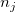

が真のとき、k レベルの標本データは、正規かつ独立して分散しており、平均
が真のとき、k レベルの標本データは、正規かつ独立して分散しており、平均  と分散
と分散  を持っています。つまり、統計量は
を持っています。つまり、統計量は
内容 |
k 個のレベルで測定された反応データがあるとします。ここで は、 j 番目のファクターレベル (j = 1, 2, ..., k)での、i番目の観測値(i = 1, 2, ...) の値を表します。そして、一元配置ANOVAのモデルを以下のように書きます。
,j = 1,2, ..., k; i = 1, 2, ...
ANOVA検定は、2つ以上の母集団(レベル)が等しいかどうかを調べます。ですから、帰無仮説は、異なる母集団の平均が同じとし、対立仮説は、少なくとも1つの標本の平均が、他とは異なるということになります。数学的に、これは次のように表すことができます。
H0:
H1:いくつかのpとqでは、とが成り立ちます。
ここで は、 j番目の標本の平均です。仮説を検定するには、全サンプルをいくつかのグループに分け、グループ内の変化に対して 、F-検定を行い、2つの変化が異なるかどうかを検定します。
数学的には、 変化を推定する各部の平均平方を使うことが出来ます。
ここで、左側の項は、二乗和の合計で、 2番目の項はtreatmentの二乗和で、これはグループ間の変化を表し、3番目の項は、誤差の二乗和で、グループ内の変化を表します。式は、一般に次のように表します。
が真のとき、k レベルの標本データは、正規かつ独立して分散しており、平均 と分散 を持っています。つまり、統計量は
F分布 に従い、はtreatmentsの平均平方、 はは誤差の平均平方になり、これらはそれぞれ自由度で二乗和を除算した形になっています。ある有意水準
はは誤差の平均平方になり、これらはそれぞれ自由度で二乗和を除算した形になっています。ある有意水準 が与えられてF 統計量が棄却値 を超える場合、帰無仮説は棄却されます。このとき、F 統計量は、有意水準 または同等の有意水準以下のP値で k-1 および n-k の自由度を持つF分布のこれは表形式の値です。
が与えられてF 統計量が棄却値 を超える場合、帰無仮説は棄却されます。このとき、F 統計量は、有意水準 または同等の有意水準以下のP値で k-1 および n-k の自由度を持つF分布のこれは表形式の値です。
通常、ANOVA表の分散分析の結果を表します。
| 分散の入力 | 自由度 (DF) | 平方和 (SS) | 平均平方 (MS) | F 値 | Prob > F |
|---|---|---|---|---|---|
| モデル (ファクター) | k-1 | / |
|||
| 誤差 | n-k |  |
|
||
| 合計 | n-1 |
分散分析で、ことなるサンプルが等分散であると仮定すると、それは、一般に分散の等質性と呼ばれます。Levene検定とBrown-Forsythe検定は、仮定を検証するのに使うことができます。k 個の反応データの標本があるものとします。ここでは、jt番目のファクターレベル (j = 1, 2, ..., k)でのi番目の観測 (i = 1, 2, ...) を表します。Levene検定とBrown-Forsythe検定の両方の仮説は、次の式で表すことが出来ます。
H0:
H1: 少なくとも1組の(p, q)に対して
を異なる検定に従い、次の3つのように定義します。
 を持つと、検定の統計量は
を持つと、検定の統計量は
になり、これは(近似的に)F分布}\,\!") に従い、 と は、それぞれの集団平均および全体平均となります。
に従い、 と は、それぞれの集団平均および全体平均となります。
少なくとも1つの母平均が十分異なることを調べるANOVAを実行すると、それに続けて、平均が異なるかどうかすべてのファクターでの可能な組合せで、複数の平均の比較が行われます。Originでは、平均比較にさまざまな方法があり、これはNAG関数のnag_anova_confid_interval (g04dbc) を使って行っています。
複数の平均の比較法の2種類がOriginに含まれています。
詳細はNAGヘルプを参照してください。
検出力分析は、サンプルデータに対する仮説の検出力だけでなく、実際の検出力を計算します。
一元配置ANOVAの検出力は、その敏感度の計測です。検出力は、一元配置ANOVAが実際の差があるときの標本の平均の差を検出するものです。帰無仮説および対立仮説に関して、検出力は検定する統計量 F が、実際に帰無仮説を棄却すべき(例：与えられた帰無仮説が真でない)ときに、帰無仮説を棄却するのに十分であるという確率です。
検出力は次式で定義されます。
ここで f は、非心のF-分布の偏りで、このF分布は dfa (モデルの自由度)とdfe(誤差の自由度) を持ちます。そして、nc = SST/MSE, ここで、SST は、モデルの二乗和、MSE は、誤差の平均平方です。probf( ) の値が、NAG関数nag_prob_non_central_f_dist (g01gdc)を使って取得されます。詳細はNAG文書をご覧ください。
上記は、簡単な一元配置ANOVAのアルゴリズムの概要であり、詳細な数学的な演算については、このマニュアルの対応する部分やNAG文書を参照してください。